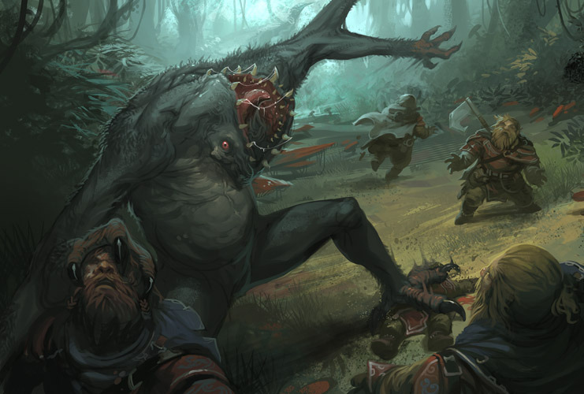

Подземелья под Зачарованным лесом населяют огромные гуги. Там они выстроили свой циклопический город, откуда на поверхность ведет лишь самое высокое строение — башня Кофа. Но гуги испытывают суеверный страх перед массивной каменной дверью с железным кольцом на ее вершине, а потому никогда не решаются открывать ее. Облик гугов поистине ужасен: их тела, покрытые черной шерстью, достигают шести метров в высоту, а мощные, почти в метр шириной, лапы раздваиваются в предплечье. Но самое отвратительное — это их головы, покрытые черной щетиной и огромные, словно бочки, с парой красноватых глаз, торчащих из-под костистых наростов и рассеченных снизу доверху вертикальной пастью, полной хищных желтоватых клыков.
Гуги безголосы и общаются при помощи жестов, а также обладают невероятно острым слухом. Благодаря этому они научились в полной темноте охотиться на мерзких гастов, которыми ограничивается их скудный рацион. Но и гасты, в свою очередь, охотятся на них ради пропитания, нападая стаями, пока те, наевшись, спят. Тела же убитых гугов, захороненные на кладбище близ их исполинского города, становятся добычей гулей, которым достаточно одного гигантского трупа, чтобы питаться на протяжении целого года.
Впервые появляются в повести Г. Ф. Лавкрафта «Сновидческие искания неведомого Кадата» (The Dream-Quest of Unknown Kadath, 1927).
